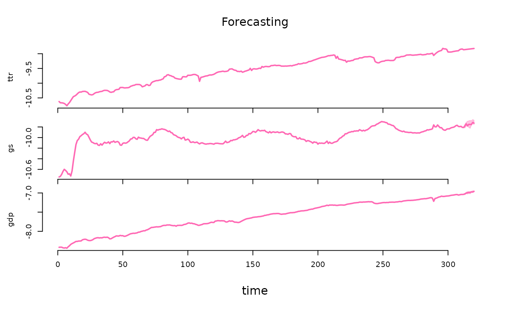

Bayesian Estimation of Structural Vector Autoregressive Models
Source:R/bsvars-package.R
bsvars-package.RdProvides fast and efficient procedures for Bayesian analysis of Structural Vector Autoregressions. This package estimates a wide range of models, including homo-, heteroskedastic, and non-normal specifications. Structural models can be identified by adjustable exclusion restrictions, time-varying volatility, or non-normality, and include exclusion restrictions on autoregressive parameters. They all include a flexible three-level equation-specific local-global hierarchical prior distribution for the estimated level of shrinkage for autoregressive and structural parameters. Additionally, the package facilitates predictive and structural analyses such as impulse responses, forecast error variance and historical decompositions, forecasting, verification of heteroskedasticity, non-normality, and hypotheses on autoregressive parameters, as well as analyses of structural shocks, volatilities, and fitted values. Beautiful plots, informative summary functions, and extensive documentation including the vignette by Woźniak (2025) <doi:10.48550/arXiv.2410.15090> complement all this. The implemented techniques align closely with those presented in Lütkepohl, Shang, Uzeda, & Woźniak (2025) <doi:10.1016/j.jeconom.2025.106107>, Lütkepohl & Woźniak (2020) <doi:10.1016/j.jedc.2020.103862>, and Song & Woźniak (2021) <doi:10.1093/acrefore/9780190625979.013.174> and they embed many popular models proposed by other authors. The 'bsvars' package is aligned regarding objects, workflows, and code structure with the R packages 'bsvarSIGNs' by Wang & Woźniak (2025) <doi:10.32614/CRAN.package.bsvarSIGNs>, 'bvars' by Liu, Ramirez Hassan, Woźniak (2026) <doi:10.32614/CRAN.package.bvars>, and 'bpvars' by Woźniak (2026) <doi:10.32614/CRAN.package.bpvars>, and they constitute an integrated toolset.
Details
Models. All the SVAR models in this package are specified by two equations, including
the reduced form equation:
$$Y = AX + E$$
where \(Y\) is an NxT matrix of dependent variables,
\(X\) is a KxT matrix of explanatory variables,
\(E\) is an NxT matrix of reduced form error terms,
and \(A\) is an NxK matrix of autoregressive slope coefficients and
parameters on deterministic terms in \(X\).
The structural equation is given by:
$$BE = U$$
where \(U\) is an NxT matrix of structural form error terms, and
\(B\) is an NxN matrix of contemporaneous relationships.
Finally, all of the models share assumptions regarding the structural
shocks U, namely, temporal and contemporaneous independence. They imply
zero correlations and autocorrelations.
The various SVAR models estimated differ by the specification of structural shocks variances. The different models include:
homoskedastic model with unit variances
heteroskedastic model with non-centred Stochastic Volatility process for variances
heteroskedastic model with centred Stochastic Volatility process for variances
heteroskedastic model with stationary Markov switching in the variances
heteroskedastic model with sparse Markov switching in the variances where the number of heteroskedastic components is estimated
heteroskedastic model with stationary heterogeneous Markov switching in the variances, where each shock volatility has its own Markov process
heteroskedastic model with sparse heterogeneous Markov switching in the variances where the number of heteroskedastic components is estimated
heteroskedastic model with exogenous heteroskedastic regime changes in the variances
a model with Student-t distributed structural shocks with estimated equation-specific degrees-of-freedom parameter
non-normal model with a finite mixture of normal components and component-specific variances
non-normal model with a sparse mixture of normal components and component-specific variances where the number of heteroskedastic components is estimated
The structural shocks can be either normally or Student-t distributed, where in the latter case the shock-specific degrees of freedom parameters are estimated.
Prior distributions. All the models feature a Minnesota prior for autoregressive parameters in matrix \(A\) and a generalised-normal distribution for the structural matrix \(B\). Both of these distributions feature a 3-level equation-specific local-global hierarchical prior that make the shrinkage estimation flexible improving the model fit and its forecasting performance.
Estimation algorithm. The models are estimated using frontier numerical methods making the Gibbs sampler fast and efficient. The estimation follows closely Lütkepohl, Shang, Uzeda, & Woźniak (2025). The sampler of the structural matrix follows Waggoner & Zha (2003), whereas that for autoregressive parameters follows Chan, Koop, Yu (2022). The specification of Markov switching heteroskedasticity is inspired by Song & Woźniak (2021), and that of Stochastic Volatility model by Kastner & Frühwirth-Schnatter (2014). The identification problems are considered in Lütkepohl, Shang, Uzeda, & Woźniak (2025) and Lütkepohl & Woźniak (2020).
Identification verification. The structural shocks can be identified through heteroskedasticity or non-normality following Lütkepohl, Shang, Uzeda, & Woźniak (2025) and Lütkepohl & Woźniak (2020). The package provides functions to verify both, homoskedasticity and normality of the structural shocks, which facilitates making probabilistic statements regarding the identification. Additionally, the package makes it possible to verify linear restrictions on autoregressive parameters.
Note
This package is currently in active development. Your comments, suggestions and requests are warmly welcome!
References
Chan, J.C.C., Koop, G, and Yu, X. (2024) Large Order-Invariant Bayesian VARs with Stochastic Volatility. Journal of Business & Economic Statistics, 42, doi:10.1080/07350015.2023.2252039 .
Kastner, G. and Frühwirth-Schnatter, S. (2014) Ancillarity-Sufficiency Interweaving Strategy (ASIS) for Boosting MCMC Estimation of Stochastic Volatility Models. Computational Statistics & Data Analysis, 76, 408–423, doi:10.1016/j.csda.2013.01.002 .
Liu, Ramirez Hassan, Woźniak (2026) bvars: Bayesian Forecasting with Large Vector Autoregressions. R package version 1.0, doi:10.32614/CRAN.package.bvars .
Lütkepohl, H., Shang, F., Uzeda, L., and Woźniak, T. (2025) Partial identification of structural vector autoregressions with non-centred stochastic volatility. Journal of Econometrics 256, 106107, doi:10.1016/j.jeconom.2025.106107 .
Lütkepohl, H., and Woźniak, T., (2020) Bayesian Inference for Structural Vector Autoregressions Identified by Markov-Switching Heteroskedasticity. Journal of Economic Dynamics and Control 113, 103862, doi:10.1016/j.jedc.2020.103862 .
Song, Y., and Woźniak, T. (2021) Markov Switching Heteroskedasticity in Time Series Analysis. In: Oxford Research Encyclopedia of Economics and Finance. Oxford University Press, doi:10.1093/acrefore/9780190625979.013.174 .
Waggoner, D.F., and Zha, T., (2003) A Gibbs sampler for structural vector autoregressions. Journal of Economic Dynamics and Control, 28, 349–366, doi:10.1016/S0165-1889(02)00168-9 .
Wang X, Woźniak T (2025). bsvarSIGNs: Bayesian SVARs with Sign, Zero, and Narrative Restrictions. R package version 2.0, doi:10.32614/CRAN.package.bsvarSIGNs .
Woźniak T (2026) bpvars: Forecasting with Bayesian Panel Vector Autoregressions. R package version 2.0, doi:10.32614/CRAN.package.bpvars .
Author
Tomasz Woźniak wozniak.tom@pm.me
Examples
spec = specify_bsvar_sv$new( # specify the model
us_fiscal_lsuw,
exogenous = us_fiscal_ex
)
#> The identification is set to the default option of lower-triangular structural matrix.
burn = estimate(spec, 5) # run the burn-in
#> **************************************************|
#> bsvars: Bayesian Structural Vector Autoregressions|
#> **************************************************|
#> Gibbs sampler for the SVAR-SV model |
#> Non-centred SV model is estimated |
#> **************************************************|
#> Progress of the MCMC simulation for 5 draws
#> Every draw is saved via MCMC thinning
#> Press Esc to interrupt the computations
#> **************************************************|
post = estimate(burn, 5) # estimate the model
#> **************************************************|
#> bsvars: Bayesian Structural Vector Autoregressions|
#> **************************************************|
#> Gibbs sampler for the SVAR-SV model |
#> Non-centred SV model is estimated |
#> **************************************************|
#> Progress of the MCMC simulation for 5 draws
#> Every draw is saved via MCMC thinning
#> Press Esc to interrupt the computations
#> **************************************************|
irf = compute_impulse_responses( # compute impulse responses
post,
horizon = 2
)
# compute forecast error variance decomposition one year ahead
fevd = compute_variance_decompositions(post, horizon = 4)
# workflow with the pipe |>
############################################################
us_fiscal_lsuw |>
specify_bsvar_sv$new(exogenous = us_fiscal_ex) |>
estimate(S = 5) |>
estimate(S = 5) |>
compute_variance_decompositions(horizon = 4) -> fevds
#> The identification is set to the default option of lower-triangular structural matrix.
#> **************************************************|
#> bsvars: Bayesian Structural Vector Autoregressions|
#> **************************************************|
#> Gibbs sampler for the SVAR-SV model |
#> Non-centred SV model is estimated |
#> **************************************************|
#> Progress of the MCMC simulation for 5 draws
#> Every draw is saved via MCMC thinning
#> Press Esc to interrupt the computations
#> **************************************************|
#> **************************************************|
#> bsvars: Bayesian Structural Vector Autoregressions|
#> **************************************************|
#> Gibbs sampler for the SVAR-SV model |
#> Non-centred SV model is estimated |
#> **************************************************|
#> Progress of the MCMC simulation for 5 draws
#> Every draw is saved via MCMC thinning
#> Press Esc to interrupt the computations
#> **************************************************|
# conditional forecasting using a model with exogenous variables
############################################################
us_fiscal_lsuw |>
specify_bsvar_sv$new(exogenous = us_fiscal_ex) |>
estimate(S = 5) |>
estimate(S = 5) -> post
#> The identification is set to the default option of lower-triangular structural matrix.
#> **************************************************|
#> bsvars: Bayesian Structural Vector Autoregressions|
#> **************************************************|
#> Gibbs sampler for the SVAR-SV model |
#> Non-centred SV model is estimated |
#> **************************************************|
#> Progress of the MCMC simulation for 5 draws
#> Every draw is saved via MCMC thinning
#> Press Esc to interrupt the computations
#> **************************************************|
#> **************************************************|
#> bsvars: Bayesian Structural Vector Autoregressions|
#> **************************************************|
#> Gibbs sampler for the SVAR-SV model |
#> Non-centred SV model is estimated |
#> **************************************************|
#> Progress of the MCMC simulation for 5 draws
#> Every draw is saved via MCMC thinning
#> Press Esc to interrupt the computations
#> **************************************************|
post |> forecast(
horizon = 8,
exogenous_forecast = us_fiscal_ex_forecasts,
conditional_forecast = us_fiscal_cond_forecasts
) -> pred
pred |> summary()
#> $ttr
#> mean sd 5% quantile 95% quantile
#> 1 -8.860009 0 -8.860009 -8.860009
#> 2 -8.854638 0 -8.854638 -8.854638
#> 3 -8.849268 0 -8.849268 -8.849268
#> 4 -8.843897 0 -8.843897 -8.843897
#> 5 -8.838526 0 -8.838526 -8.838526
#> 6 -8.833155 0 -8.833155 -8.833155
#> 7 -8.827784 0 -8.827784 -8.827784
#> 8 -8.822413 0 -8.822413 -8.822413
#>
#> $gs
#> mean sd 5% quantile 95% quantile
#> 1 -9.779970 0.04803687 -9.825098 -9.718285
#> 2 -9.743844 0.04091188 -9.785318 -9.693154
#> 3 -9.745942 0.06239980 -9.796264 -9.662950
#> 4 -9.746871 0.06662408 -9.821022 -9.671770
#> 5 -9.752431 0.07675001 -9.834245 -9.672916
#> 6 -9.730194 0.05417467 -9.780321 -9.660019
#> 7 -9.700945 0.04390913 -9.750693 -9.651724
#> 8 -9.715624 0.04299153 -9.755935 -9.665972
#>
#> $gdp
#> mean sd 5% quantile 95% quantile
#> 1 -7.026696 0.02906517 -7.060038 -6.992772
#> 2 -6.994100 0.02808946 -7.010692 -6.955457
#> 3 -6.995015 0.03518936 -7.029666 -6.952076
#> 4 -6.988299 0.03268534 -7.027709 -6.951832
#> 5 -6.993157 0.03516563 -7.037264 -6.956873
#> 6 -6.975694 0.01518184 -6.993599 -6.961614
#> 7 -6.961100 0.03000039 -6.979601 -6.919589
#> 8 -6.960792 0.01928998 -6.986188 -6.943744
#>
pred |> plot(probability = 0.68)

# estimation of a model with exogeneity restrictions on the autoregressive matrix
#############################################################
A = matrix(TRUE, 3, 7)
A[1,3] = A[1,6] = FALSE
us_fiscal_lsuw |>
specify_bsvar_sv$new(p = 2, A = A) |>
estimate(S = 5) |>
estimate(S = 5) -> post
#> The identification is set to the default option of lower-triangular structural matrix.
#> **************************************************|
#> bsvars: Bayesian Structural Vector Autoregressions|
#> **************************************************|
#> Gibbs sampler for the SVAR-SV model |
#> Non-centred SV model is estimated |
#> **************************************************|
#> Progress of the MCMC simulation for 5 draws
#> Every draw is saved via MCMC thinning
#> Press Esc to interrupt the computations
#> **************************************************|
#> **************************************************|
#> bsvars: Bayesian Structural Vector Autoregressions|
#> **************************************************|
#> Gibbs sampler for the SVAR-SV model |
#> Non-centred SV model is estimated |
#> **************************************************|
#> Progress of the MCMC simulation for 5 draws
#> Every draw is saved via MCMC thinning
#> Press Esc to interrupt the computations
#> **************************************************|
post |> summary()
#> $B
#> $B$ttr
#> mean sd 5% quantile 95% quantile
#> B[1,1] 0.1154725 0.004019744 0.1105115 0.1196155
#>
#> $B$gs
#> mean sd 5% quantile 95% quantile
#> B[2,1] -4.811566 0.2085159 -5.037618 -4.566888
#> B[2,2] 44.149597 1.8624383 41.958471 46.189395
#>
#> $B$gdp
#> mean sd 5% quantile 95% quantile
#> B[3,1] -50.23719 2.009039 -52.13000 -47.863080
#> B[3,2] -8.15469 5.405668 -15.45559 -3.810395
#> B[3,3] 68.10186 3.329092 64.37227 71.610192
#>
#>
#> $A
#> $A$ttr
#> mean sd 5% quantile 95% quantile
#> lag1_var1 0.6538423 0.05795318 0.592491928 0.7116352
#> lag1_var1 -0.2371168 0.07045611 -0.332052323 -0.1800148
#> lag1_var2 0.0000000 0.00000000 0.000000000 0.0000000
#> lag2_var2 -0.4464416 0.05856172 -0.507211159 -0.3857619
#> lag2_var3 0.0695041 0.07812954 0.007680319 0.1750013
#> lag2_var3 0.0000000 0.00000000 0.000000000 0.0000000
#> const -0.9901425 0.15929636 -1.161079063 -0.8036487
#>
#> $A$gs
#> mean sd 5% quantile 95% quantile
#> lag1_var1 -0.01519427 0.04684207 -0.06162283 0.04468810
#> lag1_var1 1.27070847 0.09860587 1.17193534 1.39707622
#> lag1_var2 0.10410025 0.11185836 -0.02736136 0.20054063
#> lag2_var2 -0.08318041 0.06273372 -0.16790957 -0.03381512
#> lag2_var3 -0.31551814 0.10128800 -0.44748819 -0.21807080
#> lag2_var3 -0.08284765 0.11933645 -0.19116368 0.05014321
#> const -0.32455566 0.07870239 -0.42387456 -0.26474410
#>
#> $A$gdp
#> mean sd 5% quantile 95% quantile
#> lag1_var1 -0.35125329 0.07593368 -0.41930981 -0.2634183
#> lag1_var1 -0.17006889 0.05634386 -0.24535868 -0.1206576
#> lag1_var2 0.84370557 0.03969843 0.79957674 0.8909831
#> lag2_var2 -0.21172632 0.06778569 -0.28356527 -0.1395282
#> lag2_var3 0.04984889 0.06026577 -0.00923003 0.1248025
#> lag2_var3 0.11607708 0.03644818 0.07287146 0.1562025
#> const -0.68723109 0.15050849 -0.83637437 -0.5136123
#>
#>
#> $hyper
#> $hyper$B
#> mean sd 5% quantile 95% quantile
#> B[1,]_shrinkage 34.47554 21.59365 17.75153 63.79023
#> B[2,]_shrinkage 220.77789 94.69053 116.35021 308.69068
#> B[3,]_shrinkage 538.38389 123.21620 386.19541 671.30326
#> B[1,]_shrinkage_scale 330.60636 189.30757 134.11571 568.06813
#> B[2,]_shrinkage_scale 526.79440 266.26232 235.16970 823.38490
#> B[3,]_shrinkage_scale 560.09771 225.60605 374.08708 853.35413
#> B_global_scale 34.11725 14.40747 18.62613 49.28804
#>
#> $hyper$A
#> mean sd 5% quantile 95% quantile
#> A[1,]_shrinkage 0.7423531 0.2172840 0.4969647 0.9758666
#> A[2,]_shrinkage 0.5527387 0.2086291 0.3151692 0.7725955
#> A[3,]_shrinkage 0.2994057 0.0838097 0.1934725 0.3780148
#> A[1,]_shrinkage_scale 8.5414702 3.7821622 5.9232481 13.6620694
#> A[2,]_shrinkage_scale 7.9185018 2.2206244 5.2067375 9.8840841
#> A[3,]_shrinkage_scale 5.4426611 1.4544545 4.0746042 7.2969312
#> A_global_scale 0.8623744 0.3021629 0.5294831 1.2259341
#>
#>